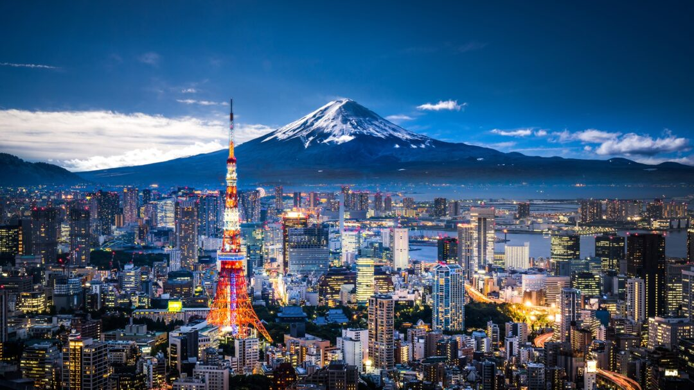
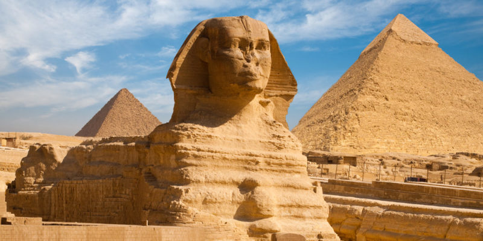

FRANCIA
Es una república semipresidencialista y una de las principales economías mundiales. Francia se destaca por su producción de vinos, sus
paisajes, cultura e historia, que hacen de este país uno de los más visitados del mundo.
Francia es un país con una historia rica y prolífica, con intelectuales y artistas que destacaron en ámbitos como la filosofía, la pintura y las letras.
La moda francesa es muy reconocida en el mundo y la ciudad de París es una de las grandes capitales del diseño textil. Entre los diseñadores
más destacados de Francia están Coco Chanel, Yves Saint Laurent, Jean Paul Gaultier, Hubert de Givenchy, Pierre Cardin, Christian Dior, Nina Ricci,
entre otros.
JAPON
Presenta un clima lluvioso y con una elevada humedad, diferenciándose notablemente las 4 estaciones bien marcadas. Esto es producto de que
dicho país se encuentra ubicado a cierta distancia respecto de la línea del ecuador.Por tanto, el clima que presenta es templado, excepto en el
sur de Japón que puede presentar algunas zonas con clima subtropical.
Dado que Japón se encuentra constituido por más de 6000 islas, su relieve presenta picos. Alrededor de un 84 % del territorio es montañoso y
su pico más alto es el Monte Fuji con 3.776 metros. Además Japón se encuentra sobre una placa tectónica relativamente activa por lo que este país
es zona de terremotos y maremotos. No obstante, Japón también presenta praderas y llanuras pero estas no son muy extensas.
EGIPTO
Los principales íconos de la arquitectura egipcia son las pirámides. Consisten en unas majestuosas construcciones de piedra que funcionaban como tumbas
y que permitían al alma emprender su viaje hacia otra vida. Disponían de un complejo sistema de pasillos y recámaras, donde finalmente ubicaban
el cuerpo momificado junto con numerosas pertenencias, comida, bebida y objetos de valor que podrían serle útiles al alma en otra vida.
Los egipcios tomaron el concepto de escritura de los sumerios y crearon su propio método pictográfico utilizando jeroglíficos (sistema basado en dibujos y en símbolos).
Principalmente gracias a la escritura, los arqueólogos pueden conocer las costumbres, creencias, historias y características de la civilización.
Las creencias religiosas sobre la muerte y la resurrección, sumado a los conocimientos sobre anatomía y química, hicieron que la civilización se
destaque en el campo de la salud.